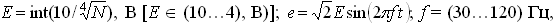
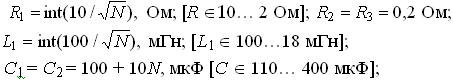
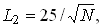
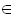
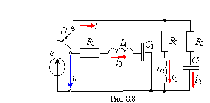

«адание 1. –ассчитать схемы контуров (рис. 8.8) при резонансных частотах. ѕараметры элементов схем найти по формулам:
,
где N Ц номер записи фамилии студента в учебном журнале группы;

 м√н с округлением до дес€тичного знака;
[L2  25Е4,6 м√н].

| ¬ариант N = Е | |
| R1LC-контур | R2LR3C-контур |
| E = Е , B | E = Е , B |
| R1 = Е, Oм | R3 = Е, Oм |
| L1 = Е, м√н | L2 = Е, м√н |
| C1 = Е, мк‘ | C2 = Е , мк‘ |
–езультаты расчЄта токов, напр€жений и углов φ занести в табл. 8.2.